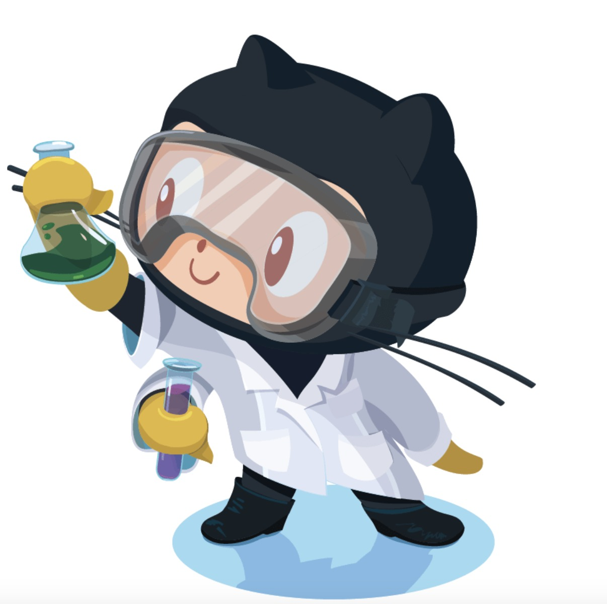

All about GitHub
Q. What is a version control system?
A. It is a software tool that tracks changes made to files over time and allows users to revert back to previous versions of a file.
Q. What is a Git?
A. A Git is a free, open-source version control system that allows users to store code, track changesm and collaborate on projects.
Q. What is the difference between Git and Github?
A. Git is a version control system that allows developers to track changes in their code while GitHub is a web-based hosting service for git repositories.
Q. Who started Github and how was it started?
A. The GitHub was developed by Chris Wanstrath, P.J. Hyett, Tom Preston-Werner, and Scott Chacon and was started by using Ruby on Rails.
Q. What company owns it now?
A. Microsoft Corporation now owns Github, which was accquired in 2018.
Q. How much does a GitHub account cost?
A. A Github account is free for basic use for individuals and organizations, for advanced collaboration it costs $4 per user a month, and for security, compliance, and flexible deployment it costs $21 per user a month
Q. What is the Octocat?
A. An octocat is a mythical creature that combines a cat head with an octopus body and became GitHub's mascot.
Git/GitHub terms:
- Repository - A centralized storage location for files, data, and resources.
- Commit - Makes a set of tentative changes permanent, marking the end of a transaction.
- Fork - A system call that creats a neew process by duplication an existing one. Both processes run independently, sharing the same code, data, and file descriptors.
- Push - The process of transferrring local repository content to a remote repository.
- Pull requests - A proposal to merge changes from one branch to another.
- Workflow - A configurable, automated process that runs one or more jobs.
- Issues - A feture that allows users to plan, track, and discuss work in a GitHub repository. Allowing users to track bugs, enhancements, or other requests.
- Raw button - Opens a file in a raw form, meaning that any HTML formatting disappears.
- Blame button - Used to examin the contects of a file line by line and see when each line was last modified and who the author of the modification was.
